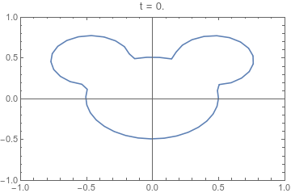
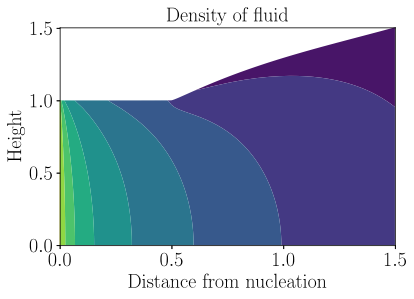

Vietnam, along with the other Greater Mekong Subregion countries, is aiming to eliminate all human malaria by 2030. They have made remarkable progress, with annual cases decreasing from over 1 million thirty years ago to around 1 thousand now. Near elimination settings are very different from high-burden locations: interventions must be more targeted to be cost efficacious and less case data presents challenges for data analytics.
Both of these issues were of concern in this project. Our aim was to provide stragegically useful information to the National Institute of Malaria Prevention and Elimination in Vietnam. This meant developing a modelling framework that could output metrics from the limited available data that were appropriate for the relevant interventions. To do this we used a range of statistical models---including network models, point-process models, and environment-driven geospatial models---to extract as much information as possible from the available data, and produce high-resolution maps. The key metrics we mapped were case-importation rate, malaria receptivity (quantified by the effective reproduction number), and malariogenic potential (a measure of the expected number of malaria cases at a location).
As a consequence of this quite sophisticated modelling pipeline, we were able to compute a range of additional quantities: probabalistic transmission chains, expected outbreak size, and oversampling rate. This last quantity, the oversampling rate, was an understated innovation in this work in which we used the various outputs along the modelling pipeline to adjust for data bias. This data bias, which is the result of heterogeneous importation rates and receptivities, is mainly of concern in near elimination settings; however, the underlying cause is present across all epidemiological regimes (not just for malaria).

The evolution of a cross-section of an extruded product with respect to a reduced-time variable τ. This 2D model is coupled to a 1D model of axial evolution. Through this coupling, the map from τ to axial distance is determined.
A 3D illustration of the evolution of an extruded mixture. The transition from red to blue colouring indicates the drop in temperature as the product expands.

The predicted density field of an extruded mixture. Greener colours indicate higher density, and purple colours indicate lower density.